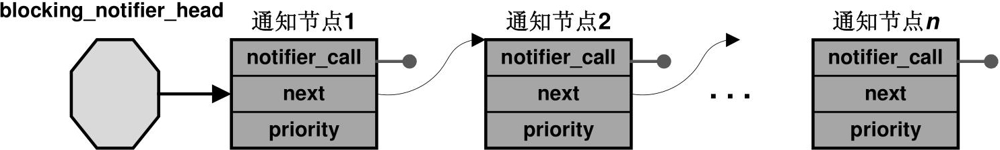

哈喽，周二愉快。我是老吴，继续记录我的学习心得。
一、实现目标的价值
对于实现目标来说，价值有三种来源：
- 成就价值、内在价值和工具价值。
某个目标可能有1个或多个价值，以跑步为例：
有的人跑步，是为了获得自律的标签，跑步里程累计达到成百上千公里，会让他感到骄傲和满足，这是成就价值。
有的人跑步，是享受跑步这件事本身，早晨的阳光或者大汗淋漓都能让人心情愉悦，这是内在价值。
有的人不喜欢跑步，但一直坚持跑步，是因为想要有个好身体以便努力挣钱，这是工具价值。
不同时间同一件事，三种价值的比例会不断变化：
- 某段时间气候特别好，你觉得跑步特别舒服，则是内在价值在起主导作用。
思考一下：
- 某些自己想做却一直没开始做的事，是否能通过为其附能上更多的价值以驱使自己开始行动呢？
二、通知链 ( notifier call chain ) 快速入门
目录：
1 | 1. 什么是通知链？ |
2 | 2. 通知链的内部实现 |
3 | 3. 如何使用通知链？ |
基于 Linux-4.14。
1. 什么是通知链？
通知链是 Linux 内核的一个基础组件，各种内核组件 (包括设备驱动、文件组件、网络组件等) 可以对向其感兴趣的一些内核事件进行注册，当该事件发生时，这些模块或者组件当初注册的回调函数将会被调用。
内核有哪些通知链？
1 | $ grep " register_.*_notifier" ./* -nR |
2 | |
3 | /* 平台架构相关 */ |
4 | ./arch/arm/kernel/kgdb.c:220: int ret = register_die_notifier(&kgdb_notifier); |
5 | ./arch/arm/kernel/smp.c:793:static int __init register_cpufreq_notifier(void) |
6 | [...] |
7 | |
8 | /* 设备驱动相关 */ |
9 | ./drivers/watchdog/smsc37b787_wdt.c:550: ret = register_reboot_notifier(&wb_smsc_wdt_notifier); |
10 | ./drivers/watchdog/sc520_wdt.c:402: rc = register_reboot_notifier(&wdt_notifier); |
11 | [...] |
12 | |
13 | /* 文件系统相关 */ |
14 | ./fs/nfsd/nfsctl.c:1275: retval = register_cld_notifier(); |
15 | |
16 | /* kernel basic 相关 */ |
17 | ./kernel/module.c:290:int register_module_notifier(struct notifier_block *nb) |
18 | ./kernel/jump_label.c:687: return register_module_notifier(&jump_label_module_nb); |
19 | ./kernel/events/uprobes.c:2050: return register_die_notifier(&uprobe_exception_nb); |
20 | ./kernel/events/hw_breakpoint.c:626: return register_die_notifier(&hw_breakpoint_exceptions_nb); |
21 | ./kernel/power/main.c:29:int register_pm_notifier(struct notifier_block *nb) |
22 | ./kernel/tracepoint.c:340: * register_tracepoint_notifier - register tracepoint coming/going notifier |
23 | ./kernel/tracepoint.c:348:int register_tracepoint_module_notifier(struct notifier_block *nb) |
24 | ./kernel/tracepoint.c:497: ret = register_module_notifier(&tracepoint_module_nb); |
25 | ./kernel/reboot.c:86:int register_reboot_notifier(struct notifier_block *nb) |
26 | ./kernel/kprobes.c:2279: err = register_die_notifier(&kprobe_exceptions_nb); |
27 | ./kernel/kprobes.c:2281: err = register_module_notifier(&kprobe_module_nb); |
28 | ./kernel/trace/trace_printk.c:378: return register_module_notifier(&module_trace_bprintk_format_nb); |
29 | ./kernel/trace/trace_events.c:3169: ret = register_module_notifier(&trace_module_nb); |
30 | ./kernel/notifier.c:553:int register_die_notifier(struct notifier_block *nb) |
31 | ./kernel/gcov/base.c:166: return register_module_notifier(&gcov_nb); |
32 | [...] |
33 | |
34 | /* 内存管理相关 */ |
35 | ./mm/oom_kill.c:1002:int register_oom_notifier(struct notifier_block *nb) |
36 | ./mm/vmalloc.c:545:int register_vmap_purge_notifier(struct notifier_block *nb) |
37 | |
38 | /* 网络相关 */ |
39 | ./net/ipv4/devinet.c:1367:int register_inetaddr_notifier(struct notifier_block *nb) |
40 | ./net/ipv4/devinet.c:1379:int register_inetaddr_validator_notifier(struct notifier_block *nb) |
41 | [...] |
2. 简单了解通知链的内部实现
通知链的实现机制：
通过链表的形式，内核将那些注册进来的关注同类事件的节点构成一个链表，当某一特定的内核事件发生时，事件所属的内核组件负责遍历该通知链上的所有节点，调用节点上的回调函数。
共有４ 种类型的通知链：
链表头如下：
1 | struct atomic_notifier_head { |
2 | spinlock_t lock; |
3 | struct notifier_block __rcu *head; |
4 | }; |
5 | |
6 | struct blocking_notifier_head { |
7 | struct rw_semaphore rwsem; |
8 | struct notifier_block __rcu *head; |
9 | }; |
10 | |
11 | struct raw_notifier_head { |
12 | struct notifier_block __rcu *head; |
13 | }; |
14 | |
15 | struct srcu_notifier_head { |
16 | struct mutex mutex; |
17 | struct srcu_struct srcu; |
18 | struct notifier_block __rcu *head; |
19 | }; |
区别在于使用了不同的锁机制，抓住核心 ( struct notifier_block __rcu *head ) 就好。
通知链节点 ( 核心数据结构 struct notifier_block )：
1 | typedef int (*notifier_fn_t)(struct notifier_block *nb, |
2 | unsigned long action, void *data); |
3 | |
4 | struct notifier_block { |
5 | notifier_fn_t notifier_call; |
6 | struct notifier_block __rcu *next; |
7 | int priority; |
8 | }; |
notifier_call: 通知节点中的回调函数;
next: 用来构成通知链;
priority: 通知节点的优先级，用来决定通知节点在通知链中的先后顺序，数值越大代表优先级越高;
2.1 以 module 通知链为例
内核模块机制中实现的 module 通知链 (module_notify_list) 是内核中众多通知链中的一条。
内核通过 module 通知链向其他对内核模块事件感兴趣的组件发送通知，通知的事件类型是模块的当前加载状态：
1 | enum module_state { |
2 | MODULE_STATE_LIVE, /* Normal state. */ |
3 | MODULE_STATE_COMING, /* Full formed, running module_init. */ |
4 | MODULE_STATE_GOING, /* Going away. */ |
5 | MODULE_STATE_UNFORMED, /* Still setting it up. */ |
6 | }; |
1) module 通知链的链表头：
1 | static BLOCKING_NOTIFIER_HEAD(module_notify_list); |
本质就是定义并初始化了: struct blocking_notifier_head module_notify_list，它用于管理所有对内核模块事件感兴趣的通知节点。
2) 关心模块状态的其他内核代码通过 blocking_notifier_chain_register() 添加节点 (struct notifier_block)：
1 | int register_module_notifier(struct notifier_block *nb) |
2 | { |
3 | return blocking_notifier_chain_register(&module_notify_list, nb); |
4 | } |
八卦一下，关心模块状态的内核代码有：
1 | grep " register_module_notifier" ./* -nR |
2 | ... |
3 | ./kernel/tracepoint.c:497: ret = register_module_notifier(&tracepoint_module_nb); |
4 | ./kernel/kprobes.c:2281: err = register_module_notifier(&kprobe_module_nb); |
5 | ./kernel/trace/trace_printk.c:378: return register_module_notifier(&module_trace_bprintk_format_nb); |
6 | ./kernel/trace/trace_events.c:3169: ret = register_module_notifier(&trace_module_nb); |
blocking_notifier_chain_register() 将通知节点加入 module_notify_list 管理的链表。在向一个通知链中加入新节点时，系统会把各节点的 priority 作为一个排序关键字进行简单排序，优先级越高的节点越靠近头节点，当有事件发生时，最先被通知：

3) 当相关事件发生时，使用 blocking_notifier_call_chain() 通知所有节点：
1 | cd kernel |
2 | grep module_notify_list ./* -nR -A 1 |
3 | ./module.c:1012: blocking_notifier_call_chain(&module_notify_list, |
4 | ./module.c-1013- MODULE_STATE_GOING, mod); |
5 | -- |
6 | ./module.c:3466: blocking_notifier_call_chain(&module_notify_list, |
7 | ./module.c-3467- MODULE_STATE_LIVE, mod); |
8 | -- |
9 | ./module.c:3530: blocking_notifier_call_chain(&module_notify_list, |
10 | ./module.c-3531- MODULE_STATE_GOING, mod); |
11 | -- |
12 | ./module.c:3625: blocking_notifier_call_chain(&module_notify_list, |
13 | ./module.c-3626- MODULE_STATE_COMING, mod); |
14 | -- |
15 | ./module.c:3786: blocking_notifier_call_chain(&module_notify_list, |
16 | ./module.c-3787- MODULE_STATE_GOING, mod); |
模块加载的不同阶段会发出不同的通知，通知链上各节点的回调函数会被触发。
以 MODULE_STATE_COMING 为例：
1 | load_module() |
2 | prepare_coming_module(mod); |
3 | blocking_notifier_call_chain(&module_notify_list, MODULE_STATE_COMING, mod); |
blocking_notifier_call_chain() 将使通知链 module_notify_list 上的各节点的回调函数均被调用，其原理就是遍历 module_notify_list 上的各节点，依次调用各节点上的 notifier_call() :
1 | blocking_notifier_call_chain() |
2 | notifier_call_chain(&nh->head, val, v, nr_to_call, nr_calls); |
3 | |
4 | static int notifier_call_chain(struct notifier_block **nl, |
5 | unsigned long val, void *v, |
6 | int nr_to_call, int *nr_calls) |
7 | { |
8 | int ret = NOTIFY_DONE; |
9 | struct notifier_block *nb, *next_nb; |
10 | nb = rcu_dereference_raw(*nl); |
11 | |
12 | // 遍历链表 |
13 | while (nb && nr_to_call) { |
14 | next_nb = rcu_dereference_raw(nb->next); |
15 | |
16 | // 调用节点上的回调函数 |
17 | ret = nb->notifier_call(nb, val, v); |
18 | [...] |
19 | nb = next_nb; |
20 | nr_to_call--; |
21 | } |
22 | return ret; |
23 | } |
遍历链表相关的知识，不是本文关注的重点。
2.2 一些可能用得上的通知链
1) reboot 通知链：
kernel/reboot.c:
1 | // 通知链头： reboot_notifier_list |
2 | |
3 | int register_reboot_notifier(struct notifier_block *nb) |
4 | { |
5 | return blocking_notifier_chain_register(&reboot_notifier_list, nb); |
6 | } |
如果你想在关机或者重启系统时做一些硬件关闭相关的事情，就需要用到这条通知链。
通知类型包括：
1 | |
2 | |
3 | |
4 | |
2) netdevice 通知链：
net/core/dev.c:
1 | |
2 | // 通知链头： netdev_chain |
3 | |
4 | int register_netdevice_notifier(struct notifier_block *nb) |
5 | { |
6 | ... |
7 | } |
用于关注网络设备相关的事件。
通知类型包括：
1 | |
2 | |
3 | |
4 | |
5 | |
6 | |
7 | |
8 | |
9 | |
10 | |
11 | |
12 | |
13 | |
14 | |
15 | |
16 | |
17 | ... |
3. 如何使用通知链？
入门 demo
使用 module 通知链监测内核模块相关的事件：
1 | static struct notifier_block *pnb = NULL; |
2 | static char *mstate[] = {"LIVE", "COMING", "GOING"}; |
3 | |
4 | // notifier callback |
5 | int get_notify(struct notifier_block *p, unsigned long v, void *m) |
6 | { |
7 | printk("module <%s> is %s, p->priority=%d\n", ((struct module *)m)->name, mstate[v], |
8 | p->priority); |
9 | return 0; |
10 | } |
11 | static int hello_init(void) |
12 | { |
13 | // alloc notifier node |
14 | pnb = kzalloc(sizeof(struct notifier_block), GFP_KERNEL); |
15 | if(!pnb) |
16 | return -1; |
17 | |
18 | pnb->notifier_call = get_notify; |
19 | pnb->priority = 10; |
20 | |
21 | // register notifier node |
22 | register_module_notifier(pnb); |
23 | printk("A listening module is coming...\n"); |
24 | return 0; |
25 | } |
26 | |
27 | static void hello_exit(void) |
28 | { |
29 | unregister_module_notifier(pnb); |
30 | kfree(pnb); |
31 | printk("A listening module is going\n"); |
32 | } |
33 | module_init(hello_init); |
34 | module_exit(hello_exit); |
运行效果：
1 | insmod notifier_mod.ko |
2 | dmesg | tail |
3 | A listening module is coming... |
4 | module <notifier_mod> is LIVE, p->priority=10 # 监测到自己被成功加载 |
5 | rmmod exfat |
6 | dmesg | tail |
7 | module <exfat> is GOING, p->priority=10 # 监测到 exfat 模块被卸载 |
4. 相关参考
深入Linux设备驱动程序内核机制，1.3
精通linux设备驱动程序开发，3.2.4
Linux设备驱动程序，NULL
三、思考技术，也思考人生
要学习技术，更要学习如何生活。
你和我各有一个苹果，如果我们交换苹果的话，我们还是只有一个苹果。但当你和我各有一个想法，我们交换想法的话，我们就都有两个想法了。
对 嵌入式系统 (Linux、RTOS、OpenWrt、Android) 和 开源软件 感兴趣，关注公众号：嵌入式Hacker。
觉得文章对你有价值，不妨点个 在看和点赞， 不点也行。
PS: 微信群满200人了，想加群的小朋友请先加我个人微信，我拉你进群。